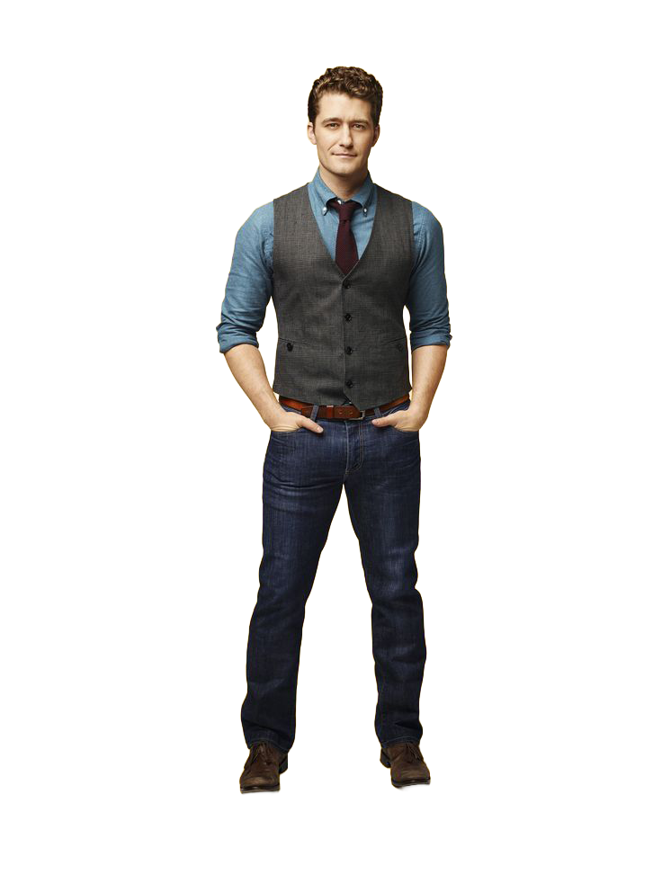
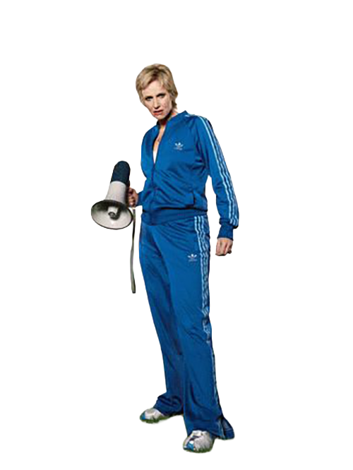
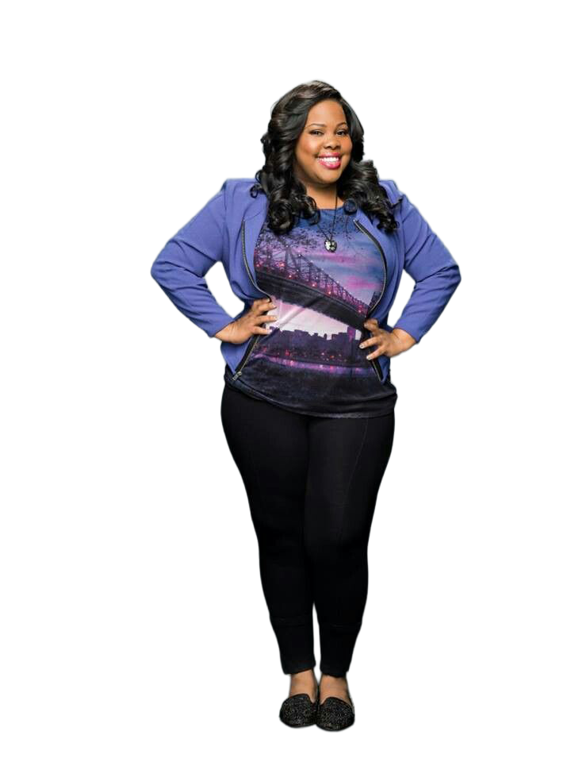
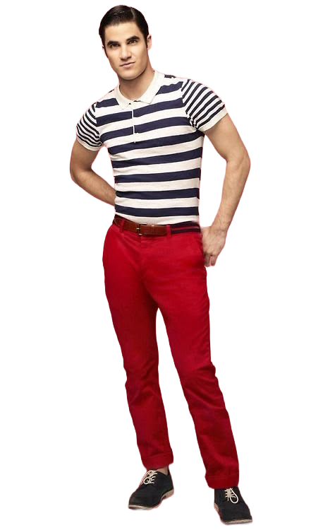
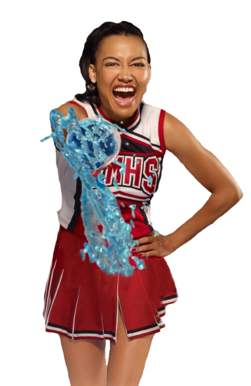
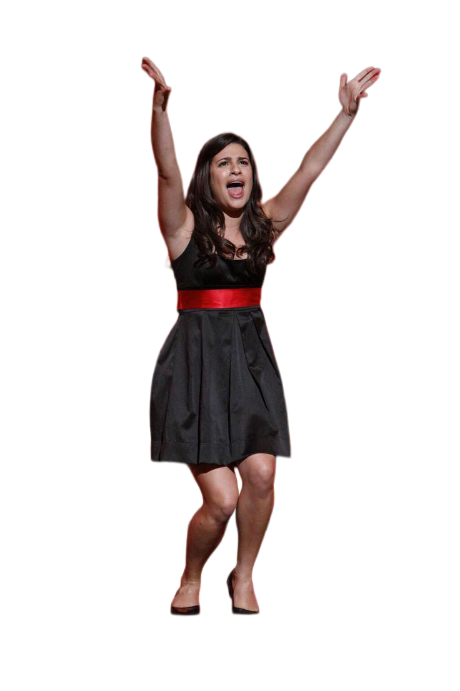

This is what you missed on... Glee!

Welcome to Glee! Everyone is welcome here and is subjected to my rapping and dancing but they take us to nationals. I started the New Directions to relive my glory days of show choir while also trying to impress the schools guidnace couselor, Emma. I love these kids, maybe a little too much, but I just want to see them succeed. Click me to check out New Directions past perforances.

Shut up Will Shuester. He is a danger to soceity and I'm here to expose him and glee club. I'm the coach for the world reowned cheerleaders, the Cheerios, and I HATE THE GLEE CLUB. I enjoy terrorizing them in my free time and making everyones life hell. I have segment on the local news called "Sue's Corner" so click me to watch clips of it.

I'm Mercedes Jones and I have the best voice in the glee club despite getting less solos than Rachel Berry. I have the most star power in the glee club which is why I eventually get my own solo album and leave Ohio. Click on me learn more about my journey and the other charcaters in the glee club.

I'm Blaine Anderson, arguably one of the most attractive guys in the glee club despite my appearnce right now. I was in the all-male acapella group the Warblers before transferring to William McKinley High School to be with Kurt. Click on me to watch some of the Warblers performances since we sound amazing together!

"I'm Santana Lopez and I'm the "realest" person in the glee club. I orignally joined the club to be a spy for Sue, but ended up falling in love and staying in performance for the rest of my life. They're doing a reboot of the show, that I sadly won't be in, but if you're interested, click my fake boobs to learn more. Oh yea, I'm sluhing you cause you're a loser.

Yes, I am Rachel Berry and yes, I am on this site twice. I don't think one of me is enough since I have enough star power to fill up every square and more with my talent. I am the most talented person in this club and show and that's why I was an Broadway and totally have a successful career in performance. Click on me to hear JUST MY SOLOS since they are the best.